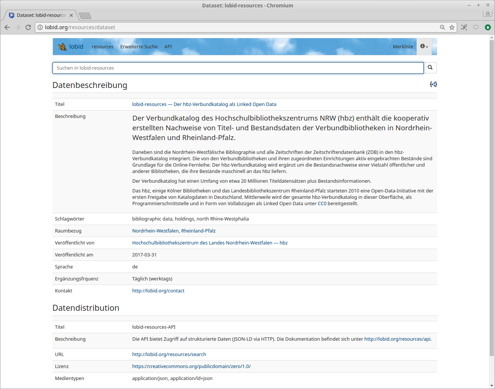

lobid 2.0
Building a LOD-based web API
Adrian Pohl / @acka47
Linked
Open Data, Hochschulbibliothekszentrum NRW (hbz)

Show & Tell, World Wide Web, 2017-07-27
This presentation:
http://slides.lobid.org/lobid-show-and-tell/

Agenda
- lobid
- lobid-resources / Demo
- API Documentation
- Lessons Learned
- Q & A
lobid

What is lobid?
Linked-Data-based data infrastructure
Research & Development since 2010
Version 2.0 recently went into production
Search UIs for end users &
web APIs (read only) for web developers
Is based on data from different sources
Data sources


lobid-resources
The data
hbz union catalogue with > 1000 cataloging libraries
> 20 Million records, > 45 Million holdings
catalging environment: Aleph
Source format: MAB-based Aleph Sequentials
ETL
Daily export from Aleph based on a local work around
Transformation to N-Triples with Metafacture
(configuration file)
Conversion to JSON-LD with addition of some concept labels with Etikett
Result is indexed into Elasticsearch
Let's take a look
https://lobid.org/resources
API Documentation
See also "Documenting the lobid API" in the lobid blog
What to document?
Data set
API, including response format
RDF properties and classes
Provenance
Data set description
See also Data on the Web Best Practices
And the rest?
https://lobid.org/resources/api
Documenting API responses
Dull, without context:

I need examples!
But examples are often only an annex to the documentation if given at all
"Descriptive approach" is predominant
Putting the example into the center of documentation!
Why not attach structured data (name, description, URI etc.) directly to examples?
Today, this is no problem with annotation tools like hypothes.is
Attached informationen
Name
Description
Coverage
Use cases
Provenance
URI
Let's try this out
http://lobid.org/organisations/api/en#jsonld
Advantages
Contextualization of the documentation
Example is up-to-date, because live data is annotated
Feedback from API users via hypothes.is possible
Intuitive usage
Enables quicker and better understanding
Lessons Learned
We learned a lot, e.g.
Anreicherung mit Wikidata-Informationen (#348)
GND-Links ergänzen (#361)
Größere Landkarte für kartenbasierte Suche (#346)
Provenienzangaben auf Feldebene
CC0 für DBS-Stammdaten
...